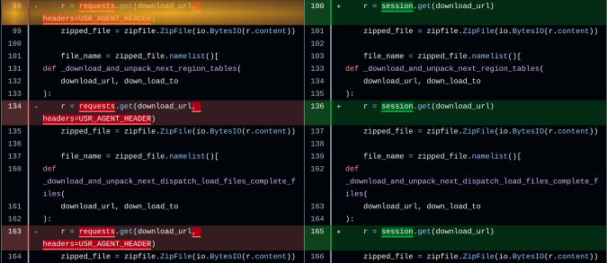

Speeding up APIs and webscraping with request.Session
One simple trick to make HTTP client code faster and nicer

Imagine you want to use Python and the requests
library to scrape data from an API site with URLs like:
https://example.com/data/2015/records.jsonhttps://example.com/data/2016/records.json- …
https://example.com/data/2025/records.json
Many people write something like:
import requests
data = []
for year in range(2015, 2026):
url = f"https://example.com/data/{year}/records.json"
resp = requests.get(url)
resp.raise_for_status()
data.append(resp.json())There's a small trick you can use to improve this: requests.Session!
This looks like:
import requests
session = requests.Session()
data = []
for year in range(2015, 2026):
url = f"https://example.com/data/{year}.json"
resp = session.get(url)
resp.raise_for_status()
data.append(resp.json())
This two-line change can drastically speed up your code. It does so by reusing the TCP connection across requests.
In the first code snippet, each requests.get() call
results in a new TCP handshake and a new TLS handshake. By using a
session, only one TCP connection and one TLS handshake is
used for the whole script (or until a timeout). If you are making a
large number of small requests this can make a large difference. In one
use case of mine it sped up data downloading by a
factor of 3. This also reduces the load on the server.
I have seen several API client libraries use a wrapper function to
add authentication, custom user agents, or other custom headers to each
requests (e.g. OpenSky)
or client libraries which add headers=self.headers to every
requests.get() call (e.g. mms-monthly-cli).
With requests.Sessions you only need to define custom
headers once. This is fewer lines of code, and I believe that for many
API clients and scraping jobs it makes more sense stylistically to
separate configuration such as authentication from the actual logic of
constructing URL paths to call. You can see this simplification in my
pull request for Nemosis.
In summary, if you're going to use requests for more
than one request to the same domain, you should probably use
request.Session(). One addition line of code can give a
tremendous speedup, and makes managing headers nicer.